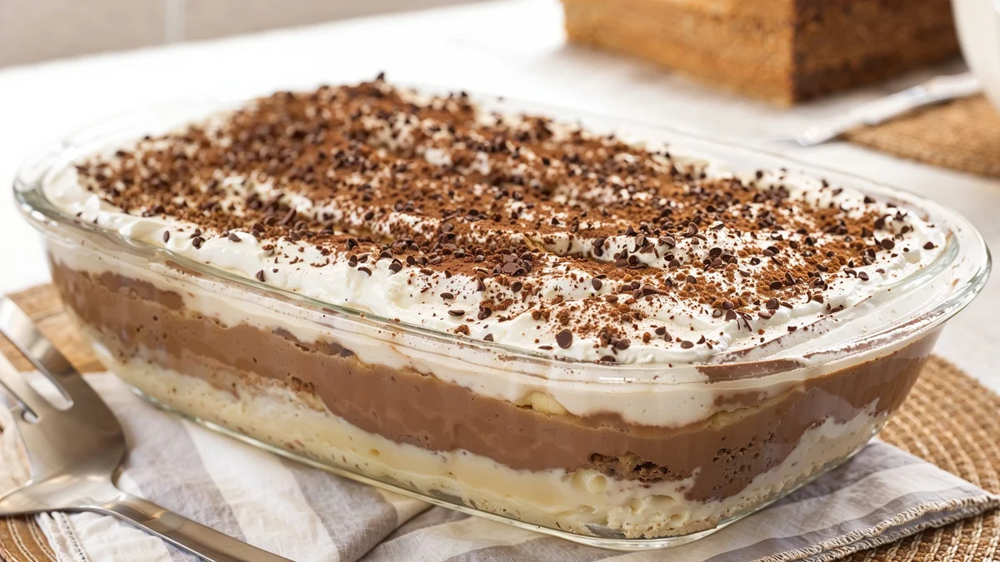

Pavê
ingredientes:
- 1 lata de leite condensado
- 2 caixas de creme de leite
- 500 ml de leite
- 2 colheres de sopa de amido de milho
- 1 colher de chá de essência de baunilha (opcional)
cobertura:
- Derreta o chocolate em banho-maria ou no micro-ondas.
- Acrescente uma caixa de creme de leite.
- Misture até formar uma ganache cremosa.
montagem:
- Coloque uma camada de creme no fundo de uma travessa.
- Molhe os biscoitos maisena rapidamente no leite.
- Faça uma camada de biscoitos sobre o creme.
- Cubra com mais uma camada de creme.
- Repita as camadas até acabarem os ingredientes.
- Finalize espalhando a cobertura de chocolate por cima.
finalizar:
- Leve à geladeira por pelo menos 4 horas.
- Decore com raspas de chocolate, se desejar.
- Sirva gelado.
